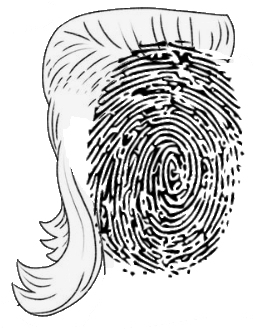

MULLET - ML LTE Fingerprinter
Brad Williams · Chris Limson
GMU CYSE 640 Wireless Network Security
Fall 2024 · Moinul Hossain, PhD

System
On AWS Ubuntu nodes, Kubernetes platform orchestration, Docker containerization
These containers are interchangeable with base station hardware:
MATLAB CLI script (.m) to generate LTE compliant modulated uplink waveform which will include RF fingerprint (RFF) then impairments, simulating device (UE) connection to Evolved Node Base (eNB base station)
Before demodulation, apply filters and OFDM to extract RFF
After demodulation eNB will also retrieve UE parameters (genuine, cloned or spoofed) like MAC
GNU Radio (Python) collect RFF Signal Metadata Format (sigMF)
MongoDB (Golang) to store RFF sigMF, and UE metadata
TensorFlow (C++) to apply RFF against Convolutional Neural Network, authenticating RFF, comparing to stored UE, classifying indications
Experiment
Connect with a defined RFF to our UE
Not found, but RFF and UE stored anyway to contribute DL
Connect again with the following, evaluate results
UE RFF
different different
different same
same different
same same
Also several trials, several RFFs
Resources
GitHub Detail
For download or online with GMU's Campus-Wide License, MATLAB and Simulink https://matlab.mathworks.com
GNU Radio https://www.gnuradio.org. On Ubuntu 24.04
sudo apt install gnuradio
gnuradio-companion
More References
Radio Fingerprinting Using Convolutional Neural Networks
Deep Learning Convolutional Neural Networks for Radio Identification
Improving security of the Internet of Things via RF fingerprinting based device identification system
MATLAB LTE Waveform Generator
MATLAB Measuring the Impact of RF Impairments on an LTE Syste
Performance Evaluation of LTE Radio Fingerprinting using Field Measurements
LTE Device Identification Based on RF Fingerprint with Multi-Channel Convolutional Neural Network
Performance evaluation of LTE radio fingerprint positioning with timing advancing
Radio Frequency Fingerprints Extraction for LTE-V2X: A Channel Estimation Based Methodology
RF fingerprinting for user locationing in LTE/WLAN networks
Enhanced Device FingerPrinting in 4G LTE Communication Networks
Documentation
CYSE640_BradChris_ProjectProposalPresentation.pdf
CYSE640_BradChris_ProjectProposalReport.pdf
(broken links below are placeholders for now)
CYSE640_BradChris_ProjectFinalPresentation.pdf
CYSE640_BradChris_ProjectFinalReport.pdf
Notes
Archive
License
MIT